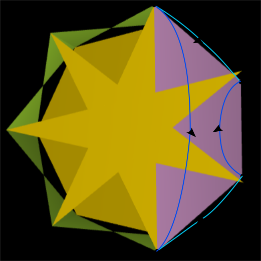
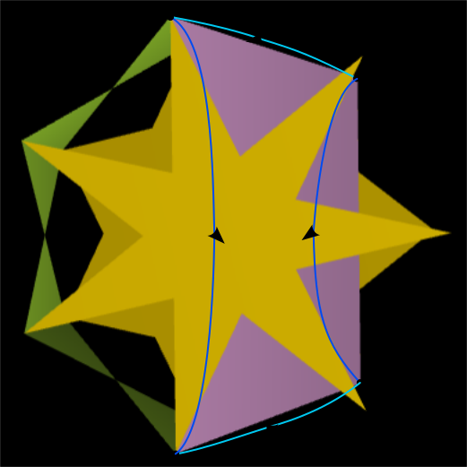

This page and the models are generated by a Python script [MTUN3], which requires the package [MTUN1]. The models are displayed with help of a simple OFF file viewer written in JavaScript [MTUN2].
Note: for optimal experience Javascript should be enabled.
Introduction
During June 2025 Don Romano posted some riddles by email regarding semicupolae ([MIRA1]) and duals and Ulrich Mikloweit ([MIKL1]) generated some model using Stella ([WEBB1]). This motivated me to investigate some new series of polyhedra.[WIKIO1].
In an email in June 2025 my friend Don posted a riddle. He sent two pictures of polyhedra he had built and asked to name the class of polyhedra they belonging to and to name the duals of these. Ulrich was able to recreate the topological equivalent polyhedron of one of them, but the second turned out a bit different. The images that Don had posted were images of keratinoids and the duals he was asking for were the 5/2 semicupola and the 5/4 semicupola, or alternatively follow this link. For the latter Ulrich's results looked a bit different and therefore Don asked him to check what its dual looks like according to Stella.
Ulrich sent the results and replied with the following remark: ".. BUT if you make the dual the base model you get a completely different shape as dual than the starting one." In other words if you take the dual of the dual of the 5/4 semicupola, you end up with something else (in Stella). The model he got was this one .

Ulrich also generated and Don used that as inspiration to build a model of a reshaped version of that one. He fit the whole thing in a heptagonal cylinder while using equilateral triangles, as shown on the left. This is a 3D model of the model then referred to as a . Don suggested to name these n/m pseudo-cupolaic prismatoids (PCP from now on). This motivated me to dive a bit deeper into this subject, while Don provided valuable feed-back and advise.
I started writing a script that would generate an OFF file for , which is similar to the Don's 7/2. These PCPs have membranes and I suggested that it is possible not to use the membranes, e.g. like this . Then I generalized the script to generate the n/2 PCPs for any value of n > 4. In a next step I generalized the script to allow for other even values of m, e.g. this .
I noticed that for some cases it wasn't possible to get equilateral triangles and instead I adjusted the height to turn the crossed rectangles into crossed squares. With crossed squares is meant crossed rectangles that fit into a square. As a consequence the triangles became isosceles, see e.g. . The next step was to extend the idea to odd m, for which it isn't possible to use triangles. Instead I decided to use trapezoids. A consequence to using trapezoids instead of triangles is that the extra edges lead to an {n/p} polygon parallel to the original {n/m} polygon, see e.g.
So far the script didn't allow digons to be used, as happens e.g. in the case of {8/4}. Since digons will just degenerate into edges they wouldn't actually be a problem and hence the script was adjusted to allow those as well, see e.g. . Finally I allowed the script to generate the PCP for n=3, see e.g. , and n=4, e.g. .
Finally I decided to summarise our findings here with the help of Don Romano, who wrote a first draft of the text for the general definition. Thanks, Don!
I noticed that some PCP are compounds and that some of the compounds weren't generated by the script automatically. More investigation showed the some other PCPs were missing and that a new notation was necessary. One PCP that was missing was e.g. and therefore we adapted the notation from 'n/m' to 'n/m | n/p'.
An 'n/m | n/p' pseudo-cupolaic prismatoid (PCP), with n > 2, is a polyhedron that can be inscribed in a right prism such that its base polygons (including star polygons henceforth) lie in the base planes of the circumscribing prism along with a set (or 'belt') of 2n joining polygons of two distinct kinds (n of each) that serve to join the two bases together.
The 'n/m | n/p' notation used here is consistent with the {n/m} notation used for designating star polygons. In two dimensions an {n/m} polygon is the same as an {n/(n-m)} polygon. A combination of both is used for PCP as explained below.
A PCP has two parallel and opposing bases. These bases can be of three distinct types:
- A polygon
- A digonal base composed of n coplanar digons (degenerate) which correspond to the diametrical diagonals of an n-gon (n being even) that intersect at their mid-points in a radial arrangement
- A pseudo-base in which a polygon is not physically present although its base plane is clearly determined by n coplanar vertices of the PCP's joining polygons.
Of the pairings that can be made with the above three base types, only four combinations occur in a PCP:
- A polygon base and a digonal base
- A polygon base and a pseudo-base
- A digonal base and a pseudo-base
- Two polygon bases.
When a pseudo-base is present then this will be denoted by using the value n as denominator for the second base: 'n/m | n/n'
When two polygon bases are present they will both be n-gons having the same n, but possibly different values for m and p.
Apart from the base(s) a n/m | n/p PCP has a set of in total 2n polygons. This set consists of two (possibly the same) types of polygons that join the bases. Half of these joining polygons are crossed rectangles that are only vertex-coincident with the two bases. The height of a PCP can be scaled so that these crossed rectangles become crossed squares. The other half of these joining polygons are of a type only from the following:
- Isosceles triangles (possibly equilateral)
- Trapezoids (possibly trisosceles)
- Rectangles (possibly crossed)
This type of n polygons shares some of its edges with one or both of the PCP's bases. For a base polygon {n/q} the value of q is determined as follows: If the dihedral angle between this type of polygon and the base is smaller than 90°, then of the two possible values q and n-q the one that is bigger than n/2 is used. Otherwise the smaller value is used.
As an example consider . This shows a 7/6 | 7/3 with some faces removed for clarity reasons. The dihedral angle between the trapezoid and the {7/3} is bigger than or equal to 90° and from the perspective of that base the trapezoid points outwards. For this reason {7/3} is written, i.e. the value p <= n/2 is used. On the other hand the dihedral angle between the trapezoid and the heptagon, a {7/1}, is less than 90° and the trapezoid points inwards here. For this reason {7/6} is used instead, i.e. m > n/2. is an example where all dihedral angles are smaller than 90°, i.e. the trapezoid point inwards for both bases. For that reason both m and p have values bigger than n/2.
The two types of polygons form one or more surrounding 'belts' in which these types appear in an alternating way.
For an n/m | n/p PCP we can make the following observation and patterns:
PCPs with a Pseudo-Base
A pseudo-base only occurrs for an {n/m} polygon for which the value of m is even. This means that any valid pseudo-based PCP holds that it is a n/m | n/n with m even. These PCP always consist for isosceles triangles. Note that an isosceles triangle is obtained from an isosceles trapezoid if the length of one of the parallel sides gets 0. Examples of PCP with a pseudo-base are:
PCPs with Equilateral Triangles
For some PCP with a pseudo-base the isosceles triangles can be turned into equilateral triangles by scaling the height of the PCP. Compare for instance
In general a PCP scaled in such a way that it has equilateral triangles will not have crossed squares. The PCP and compounds of those like are the exception though. It is not always possible to scale the PCP with pseudo-base to get equilateral triangles, e.g. for the it obvious that the height will become 0 in that case. All models shown on this page will try to scale the height so that equilateral triangles are used if possible. In all other cases the height is adapted so that crossed squares are obtained.
PCPs that Lack a Pseudo-Base
All PCP that lack a pseudo-base don't have triangles; They only consist of crossed rectangles and trapezoids or rectangles, both of which can possbily be crossed. Examples are
For these PCP the following holds to get a valid n/m | n/p:
- For any m < n/2 the only valid PCP is the one for which p = m.
- There are no valid PCPs for m = n/2.
- For any m > n/2 the only valid PCPs are for n-m < p <= m < n with p = n-m + 2k, where k is a natural number.
PCPs with Coplanar Crossed Squares
Certain values of m and p lead to PCP with coplanar crossed rectangles or crossed squares after scaling the height. These crossed squares become squares and the PCP doesn't result in anything new, but they are shown here for completeness. The result is a prism or a compound of prisms. Examples are
These PCP occur for n/m | n/m where m < n/2. Note that the case where m = n/2, e.g. a 8/4 | 8/4, is excluded by definition, since this will result in two digonal bases and the result will just be a fan of 4 rectangles or squares.
PCPs with Membranes
Some of the PCP have membranes. In the beginning we only found PCP with pseudo-base with membranes, but there are also PCPs with two bases that have membranes. Some examples of PCPs with membranes are:
For a pseudo-base PCP n/m | n/n a membrane occurs when m < n / 2. For PCPs n/m | n/p with a double polygon base membranes occur when m > n / 2 and and p < n / 2. Membranes do not occur for PCP with a digonal base.
PCPs with a Digonal Base
For a PCP n/m | n/p if n is even and m = n / 2 or p = n /2 then the PCP will have one digonal base consisting of n/m or n/p digons respectively. The former only occurs for PCP with pseudo-bases, while the latter only occurs for PCP that don't have a pseudo-base. The digons will just degenerate into edges. Some examples are
Semi-Uniform PCPs
For some PCP the 'belt' contains rectangles instead trapezoids. This happens for PCP n/m | n/p that lack pseudo-bases and where the bases {n/m} and {n/p} are the same polygon. The case for which p = n-p is not a valid PCP with two bases, hence it must be that p = m. If p = m < n/2 then the PCP will have coplanar crossed rectangles, if p = m = n/2 then there are two digonal bases, which is not valid, which mean that a PCP becomes semi-uniform when p = m and p = m > n/2.
Since both bases are the same these are semi-uniform, and since these rectangles also meet the at the centre these are hemi-polyhedra as well. Here are some examples of these semi-uniform hemi-PCP that have rectangles:
Compound PCPs
Some of the PCP are compounds. Consider a n/m | n/p with n = kn', m = km', and p = kp', where k is a natural number bigger than 2. If n'/m' | n'/p' fulfills the requirements for a valid PCP given in subsections "PCPs with a Pseudo-Base" and "PCPs that Lack a Pseudo-Base" then it seems that n/m | n/p is a compound of k n'/m' | n'/p'. For example:
- is a compound of two
- is a compound of three of those.
- is a compound of two
- is a compound of three
- is a compound of three
Not all PCP where a k exists are automatically a compound, e.g:
- isn't a compound of two 3/2 | 3/2, since a PCP 3/2 | 3/p is only valid according to the third rule in subsection "PCPs that Lack a Pseudo-Base" if 1 < p <= 2 < n with p = 1 + 2k. This means there is no 3/2 | 3/p with two bases.
- isn't a compound of two 3/1 | 3/3, since a PCP 3/m | 3/3 is only valid according to the rule in subsection "PCPs with a Pseudo-Base" if m is even.
- isn't a compound of two 6/5 | 6/4, since a PCP 6/5 | 6/p is only valid according to the third rule in subsection "PCPs that Lack a Pseudo-Base" if 1 < p <= 5 < 6 with p = 1 + 2k, i.e. only for p = 3, or p =5; not p=4.
- , which isn't a compound of four 6/2 | 6/2, since that is an invalid PCP according to the second rule in subsection "PCPs that Lack a Pseudo-Base", because otherwise it would consist of two digon bases.
Consistent Rotation Direction for {n/q} Notation
In two dimensions the value q for a polygon {n/q} can be interpreted as the vertex offset for the diagonal that is followed. Take the example of that was given in the definition. In the image below the arrows with cyan colour follow the edges of one trapezoid. For the base polygons whether to follow the clockwise or counter-clockwise direction is determined by the denomitor q so that the correct vertex offset is obtained.
One can see that for both polygons the same direction is used, which is counter-clockwise here. Note that if you would flip the PCP or if you would follow the trapezoid in the opposite direction, it would have been in a clockwise direction. The essence here is that the same direction is followed. By definition this is the case for all PCPs.
For instance the same holds for the other example that was given, . The image below shows a similar image for that one.
One can see that even here for both base polygons the same direction is followed.
All OFF files that are use on this web page can be found here. However this web site uses a simple OFF file viewer that has problems with showing self-intersecting polygons. There the OFF files are adjusted so that the outlines of the polygons are shown. As a consequence the crossed rectangles are drawn as concave hexagons and e.g. a pentagram is drawn as a concave decagon. As a consequence edges will be split. I understand that if you would like to view these in Stella then it will generate an error that edges have an odd amount of faces attached.
For these users I created this ZIP file. that contains all OFF files without using the outlines. Naturally if you load this in the OFF file view on this site, then they wont show correctly, e.g. a pentagram will have a hole.
If you want to generate them yourself for higher n, then you can use the Python script as mentioned in [MTUN3].
Compound PCPs
The compound theorem was checked for all kn/km | kn/kp until kn = 12 manually. It would be great to add a section that proofs this.
With Pseudo Base
With Two Bases and a {3/1}
With Pseudo Base
With Two Bases and a {4/1}
With Pseudo Base
With Two Bases and a {5/1}
With Two Bases and a {5/2}
With Pseudo Base
With Two Bases and a {6/1}
With Two Bases and a {6/2}
With Pseudo Base
With Two Bases and a {7/1}
With Two Bases and a {7/2}
With Two Bases and a {7/3}
With Pseudo Base
With Two Bases and a {8/1}
With Two Bases and a {8/2}
With Two Bases and a {8/3}
With Pseudo Base
With Two Bases and a {9/1}
With Two Bases and a {9/2}
With Two Bases and a {9/3}
With Two Bases and a {9/4}
With Pseudo Base
With Two Bases and a {10/1}
With Two Bases and a {10/2}
With Two Bases and a {10/3}
With Two Bases and a {10/4}
With Pseudo Base
With Two Bases and a {11/1}
With Two Bases and a {11/2}
With Two Bases and a {11/3}
With Two Bases and a {11/4}
With Two Bases and a {11/5}
With Pseudo Base
With Two Bases and a {12/1}
With Two Bases and a {12/2}
With Two Bases and a {12/3}
With Two Bases and a {12/4}
With Two Bases and a {12/5}
References
- [MCNE1] : Interactive Polyhedra, Jim McNeill; e.g. about cupolas
- [MIKL1] : Ulrich Miklweit's Polyhedron Garden, web site; Available here
- [MIRA1] : Miraheze MediaWiki about Cupolae, miraheze; Available here
- [MTUN1] : The script to generate the models requires the Python package Orbitit, github; Available here
- [MTUN2] : Interactive 3D models through JS package show-off, github; Available here
- [MTUN3] : All models created with Python package orbitit-scripts, github; Available here
- [WEBB1] : Stella: Polyhedron navigator, Robert Webb; Available here
- [WIKI1] : Wikipedia: Polyhedron